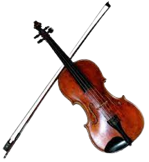

O violino moderno foi desenvolvido no final do século XVIII e início do século XIX. O design e as técnicas de construção foram aperfeiçoadas. Ele se tornou violino padrão moderno o principal instrumento nas orquestras sinfônicas e ganhou grande popularidade em diversas tradições musicais ao redor do mundo.

possui uma estrutura tradicional que inclui uma caixa de ressonância em forma de oito e duas aberturas em forma de "f" nas laterais. É feito de madeiras tradicionais, possui quatro cordas de tripa ou aço e é tocado com um arco de crina de cavalo.